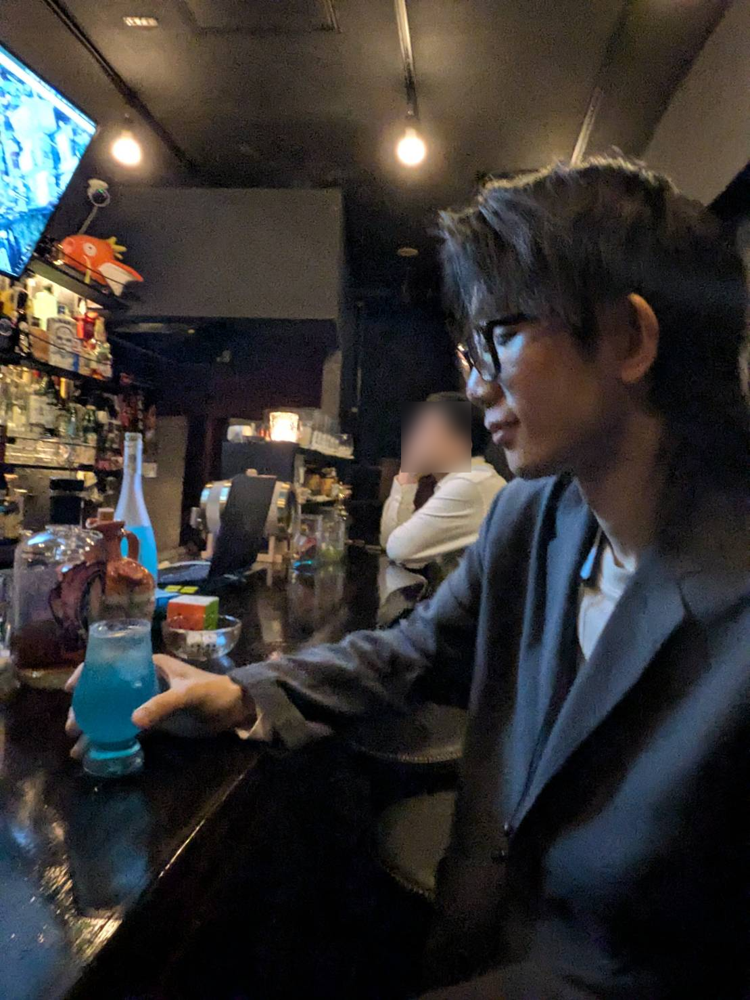

INDEPENDENT SYSTEM / 2026
山田太郎（仮名）
フリーランスエンジニア フルスタック



01 / 03
FIELD NOTES
// ACTIVE
01 / PROFILE
ゼロイチを
トライする。
課題解決のための個人開発を行っています。
身近な課題、社会課題の解を最短で見つけ出します。
INDEPENDENT SYSTEM / 2026
フリーランスエンジニア フルスタック

FIELD NOTES
// ACTIVE
01 / PROFILE
課題解決のための個人開発を行っています。
身近な課題、社会課題の解を最短で見つけ出します。